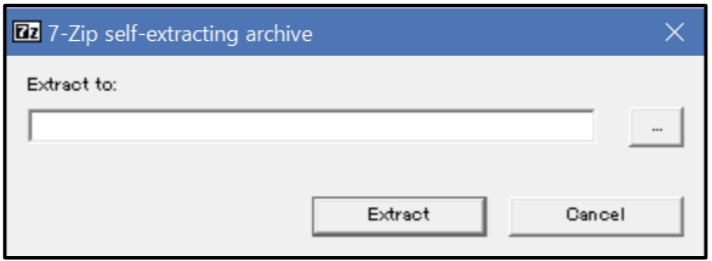
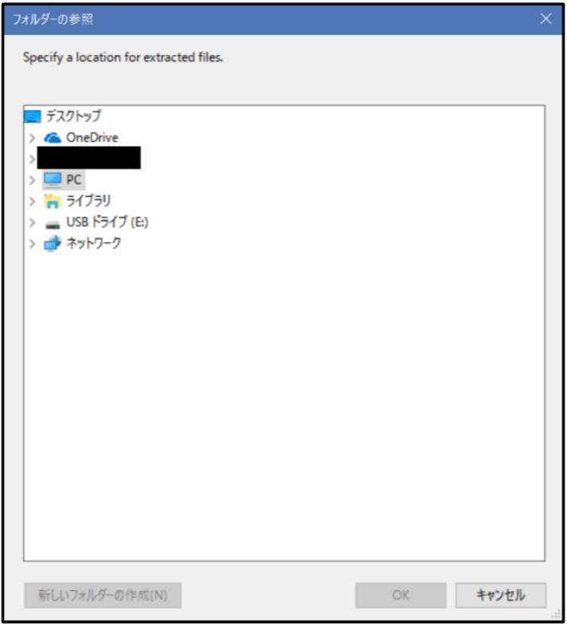

使い方（Windows をお使いの場合）
1. ダウンロードページのダウンロードボタンをクリックします．
2. 下の画面になるので，ダウンロードをクリックします．
3. ダウンロードした「これを実行して下さい (Windows).exe」というファイルを起動します．
4. アプリケーションが実行されると，「このアプリケーションを実行しますか？」等の警告メッセージが表示される場合があります．その場合は，続行や OK などを選択して下さい．
5. 下のようなウィンドウが開くので，ウィンドウ右部にある［…］をクリックします．

6. ゲーム・ソフトを保存する場所を選択するウィンドウが表示されます．ウィンドウ上部にある「デスクトップ」を選択し，「OK」ボタンをクリックします．

7. 5.で開いたウィンドウに戻るので，ウィンドウ下部にある「Extract」をクリックします．しばらくすると，デスクトップに「海城中高コンピューター部 2018」というフォルダーが作成されます．このフォルダーの中にある「ランチャー.exe」を起動すると，ランチャーを起動することが出来ます．
使い方（macOS をお使いの場合）
1. Finder で DVD から「これをダブルクリックして下さい (macOS).zip」というファイルをデスクトップにコピーします．
2. デスクトップ上で「これをダブルクリックして下さい (macOS).zip」をダブルクリックすると，デスクトップに「海城中高コンピューター部 2018」というフォルダーが作成されます．
3. このフォルダーの中に macOS 上で実行可能なゲーム・ソフトがフォルダーに分けられているので，「（ゲーム・ソフトの名前）.app」をダブルクリックして手動にて起動して下さい．